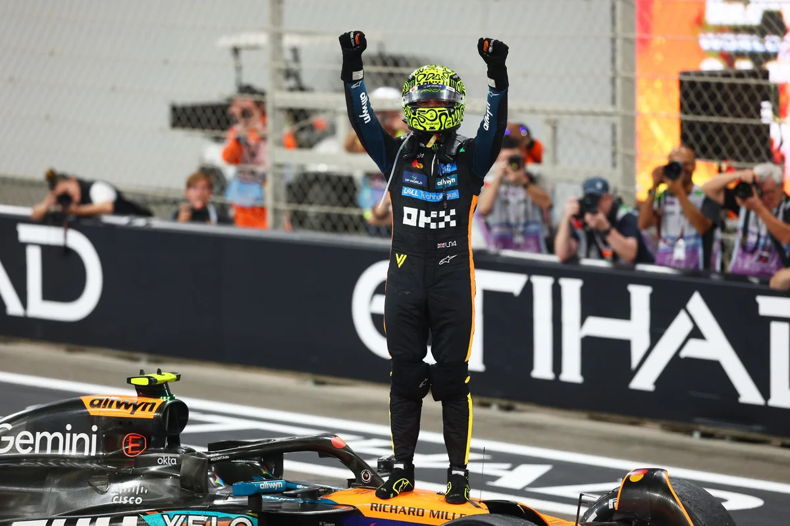

Lando Norris Campeão Mundial de 2025 – Um Ano Histórico

Texto resumido...
Leia mais →Acompanhe tudo sobre a temporada 2025 em um só lugar.
A Fórmula 1 é a principal categoria do automobilismo mundial. Ela nasceu oficialmente em 1950, quando a FIA organizou o primeiro Campeonato Mundial de Pilotos. Nos anos iniciais, a categoria foi dominada por nomes como Fangio, que conquistou cinco títulos e se tornou um dos maiores pilotos da história.
Ao longo das décadas, a F1 evoluiu rapidamente. Nos anos 60, os carros ganharam mais tecnologia e os motores passaram a ser montados atrás do piloto. Nos anos 70, surgiram as asas aerodinâmicas e as discussões sobre segurança após vários acidentes graves. Já nos anos 80, a era turbo trouxe carros extremamente potentes e rivalidades históricas, como Senna x Prost.
Nos anos 90, a eletrônica avançada e a telemetria transformaram os carros, e Michael Schumacher dominou a categoria com sete títulos, cinco deles seguidos pela Ferrari. A partir dos anos 2000, a F1 passou por mudanças para reduzir custos, aumentar a segurança e tornar as corridas mais disputadas. Em 2014, começou a era híbrida, marcada pelo domínio da Mercedes e de Lewis Hamilton, que igualou o recorde de Schumacher.
Hoje, a Fórmula 1 é uma competição global com tecnologia de ponta, pilotos de elite e milhões de fãs no mundo todo, mantendo sua posição como o ápice do automobilismo.
A Fórmula 1 é a principal categoria do automobilismo mundial, organizada pela FIA. O campeonato começou oficialmente em 1950, com a primeira corrida realizada em Silverstone, na Inglaterra. Desde então, a F1 se tornou referência em velocidade, tecnologia e competição.
A temporada é formada por vários Grandes Prêmios disputados em diversos países. Cada etapa inclui treinos, classificação e corrida. A classificação define o grid de largada, e na corrida os 10 primeiros colocados marcam pontos, com o vencedor recebendo 25 pontos.
As equipes competem em dois campeonatos:
Mundial de Pilotos, decidido pelo piloto que mais pontua.
Mundial de Construtores, somando os pontos dos dois pilotos de cada equipe.
Os carros de F1 são projetados individualmente por cada equipe, usando tecnologia avançada, motores híbridos e aerodinâmica de alto nível. É um esporte que combina estratégia, inovação e habilidade, sendo um dos mais assistidos do mundo.
Texto resumido...
Leia mais →
A Ferrari vive seu melhor momento em anos, alcançando cinco vitórias consecutivas na metade da temporada. Com um carro equilibrado e estratégias agressivas, a equipe italiana voltou a brigar pelo topo e reacendeu a esperança de título entre os tifosi.
Leia mais →Após uma atualização que não funcionou como esperado, a Red Bull sofreu uma queda significativa de desempenho. A equipe enfrentou dificuldades com aderência e ritmo de corrida, permitindo que rivais diretos assumissem a dianteira na disputa pelo campeonato.
Leia mais →Texgo resumido
Leia mais →